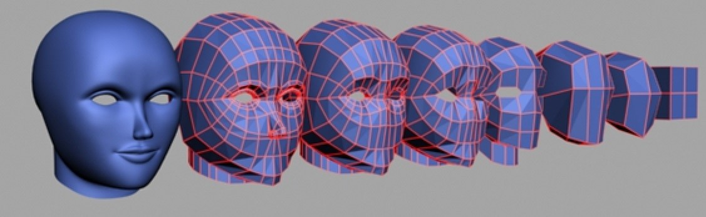

Introducción al Modelado 3D
El modelado 3D es una técnica utilizada para crear representaciones digitales tridimensionales de objetos. Se utiliza en una amplia variedad de campos, como la animación, la arquitectura, la medicina y la impresión 3D. El modelado 3D se ha vuelto esencial en la producción de películas, series de televisión, videojuegos y publicidad.
Existen diferentes tipos de software de modelado 3D, desde programas básicos para principiantes hasta herramientas profesionales utilizadas en la industria del cine y la animación.